TVV RESEARCH SLATE — October 22, 2026 — 11 desks
1. Major Geopolitical Conflict Developments
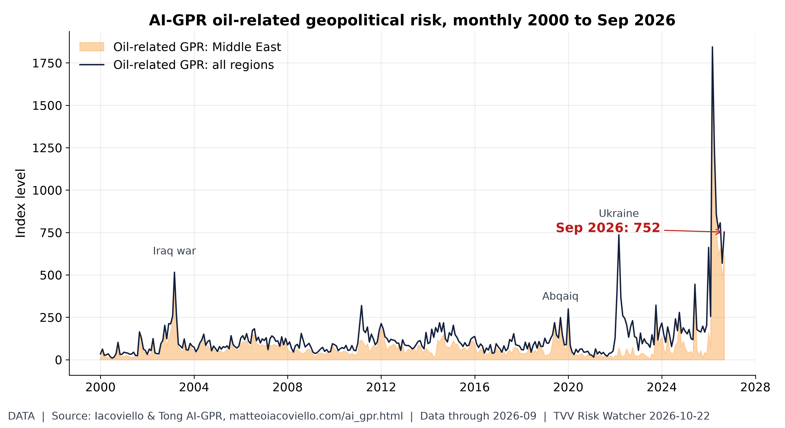
Oil geopolitical risk: off the March peak, still high. Iacoviello's oil-related AI-GPR read 752 in September, below the March 2026 record of 1,844 but above the 2003 Iraq-war (515) and 2022 Ukraine (736) readings. [Data; data as of 2026-09 (held: monthly, next update early Nov)] Source: matteoiacoviello.com data page
- ★ Hormuz southern corridor: UANI said Oct 21 US-facilitated, AIS-off transits continue; CENTCOM says the lanes are mine-free and blames Iranian missiles and drones, as the IRGC claimed Oct 22 seven vessels hit, three by mines. No new JMIC note since Oct 18. UANI Oct 21 · CENTCOM via Kurdistan24 · Reuters via Arab News · JMIC 106
- Hormuz targeting: at least five of the 23 recorded attacks on ships near the strait in the first two weeks of October hit engine rooms, Bloomberg reported, which CTP-ISW said Oct 21 points to infrared-guided cruise missiles or drones; the IMO counts 119 incidents and 24 seafarer deaths since the war began. CTP-ISW Iran Update Oct 21 · UANI Oct 21
- ★ Ukraine's Air Force said Russia fired Iskander-M, S-400, Zircon and Onyx missiles and 210 drones from 18:00 Oct 21; 181 drones were downed or jammed by 09:00 with hits at 32 locations. Seven were killed nationwide and 15 wounded in Kyiv. Ukrainska Pravda Air Force · Euronews casualties
- Russia: Moscow mayor Sobyanin said 630 drones were headed for the Moscow region overnight, 163 of them toward the capital, with two people wounded; Tula's governor reported 70 drones downed, Euronews said Oct 22. Euronews
- ★ Talks: after Witkoff met Putin, the Kremlin said it is willing in principle to resume trilateral talks with Ukraine and the US, possibly in mid-November after the midterms; Trump said the sides are maybe the closest yet to ending the war. Euronews Kremlin talks
- ★ Saudi Arabia: an attack on Dammam's King Fahd airport on Oct 21 killed two and wounded eight, after intercepted-drone debris killed two at Aramco's Shaybah field; the US ordered non-emergency staff and families out of the kingdom over Houthi attacks. Al Jazeera King Fahd · Al Jazeera US departure
- Iran-US: the New York Times reported US and Israeli plans for a short but intensive round of strikes on Iran after the midterms; Rubio said a deal is extremely difficult and Araghchi said Oct 21 Hormuz stays closed until Washington accepts Iran's terms. CNBC / NYT report · The National Araghchi · Al Jazeera live
- Iran's security chief Mohsen Rezaei told Pakistan's army chief Asim Munir in Tehran there will be no talks with Washington until Iran's seven conditions are met and that no enriched uranium will leave Iran, Reuters reported Oct 21. Reuters via Arab News
- Iraq closed the al-Sheeb crossing with Iran on Oct 21, which CTP-ISW tied to US pressure, after Pakistan shut two crossings; Iraq's prime minister also ordered Houthi offices closed and active Houthi members expelled. CTP-ISW Iran Update Oct 21
- Yemen: the Houthis hit a government military camp at Aden airport and al-Rayyan airport in Mukalla with drones and ballistic missiles on Oct 21, and Saudi air defences intercepted at least seven drones near Medina and in the south, CTP-ISW said. CTP-ISW Iran Update Oct 21
- Israel votes Oct 27: a poll released Oct 21 put Eisenkot's Yashar at 20 seats to 19 for Likud and his bloc at 52 against 49 for Netanyahu's, with Arab parties at 15 and neither side at 61. The State of Israel poll
- Taiwan's MND detected no PLA aircraft from 6 a.m. Oct 21 to 6 a.m. Oct 22, but six PLAN ships and seven official ships operated around Taiwan. Taiwan MND Oct 22
- Sudan: a drone strike on Amiet Market in the disputed Abyei region killed at least 153 people, a South Sudanese official said Oct 20; South Sudan blamed Sudan's army and summoned its ambassador, and MSF is treating more than 20 wounded. Al Jazeera Abyei
2. Major Terror / Security Incidents
- ★ Somalia: two bombs on Oct 21 hit a passenger vehicle on the Mogadishu-Baidoa road and a motorcycle near Afgoye in Lower Shabelle, killing at least three with others feared dead; no group claimed the blasts in an area where al-Shabaab is active. Somali Report Lower Shabelle
- Pakistan: a blast near Mian Ghundi in Quetta's Sona Khan area killed two policemen and injured three on Oct 20, and gunmen abducted Chashma Sugar Mills workers from a bus near Ramak in Dera Ismail Khan the same day, SATP said. SATP terrorism update
- India: a 44-year-old Kuki civilian was shot dead while collecting bamboo shoots in Manipur's Kangpokpi district on Oct 20; villagers blamed NSCN-IM and ZUF-K militants, which has not been independently verified, SATP said. SATP terrorism update
- Afghanistan: Afghanistan Freedom Front fighters attacked a Taliban checkpoint on the Kabul-North highway in Parwan on Oct 20, killing three Taliban fighters and injuring two, SATP said citing posts on X. SATP terrorism update
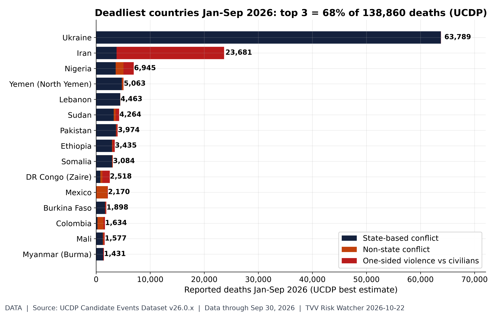
The deadliest conflict zones of 2026. UCDP candidate events Jan-Sep 2026: 138,860 deaths worldwide; Ukraine 63,789, Iran 23,681, Nigeria 6,945, Yemen (North Yemen) 5,063, Lebanon 4,463. Largest one-sided (civilian-targeted) toll: Iran 19,901. UCDP codes organized violence (state, non-state, one-sided), which includes but is not limited to terrorism; candidate data are preliminary and revised monthly. [Data; data as of Sep 30, 2026 (candidate GED v26.0.9, merged with v26.0.1-6/0.7/0.8)] Source: ucdp.uu.se data page
3. Earthquakes and Eruptions
- ★ USGS lists no new damaging quake since Oct 9 and no M6+ since the Vanuatu M6.3 on Oct 20; the largest since was an M5.3 on the Reykjanes Ridge at 2138 UTC Oct 21, part of an offshore swarm with M5.0 events at 1906 and 2158 UTC. USGS M4.5+ week feed · USGS Reykjanes M5.3
- Other M5+ on Oct 21: two M5.0 quakes about 195 km WNW of Port-Olry, Vanuatu, near the Oct 20 M6.3, an M5.1 164 km NE of Lospalos, Timor-Leste, and an M5.1 south of Africa; none carried a PAGER alert. USGS M4.5+ week feed · USGS Timor-Leste M5.1
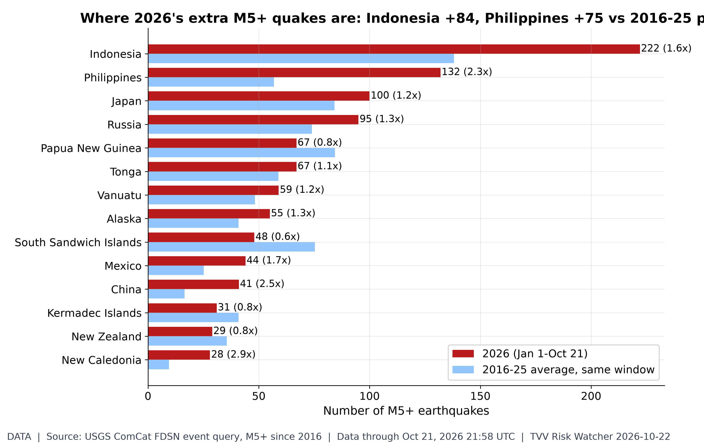
Which regions are shaking more?. USGS ComCat M5+ through 21:58 UTC Oct 21: 1,631 in 2026 vs a 2016-25 average of 1,394 for the same Jan 1-Oct 21 window. Busiest: Indonesia 222 (avg 138.1), Philippines 132 (avg 56.8), Japan 100 (avg 84.2), Russia 95 (avg 74.0). Biggest excess vs normal (regions averaging 5+): Panama 4.6x, New Caledonia 2.9x, China 2.5x. Regions are USGS place-name tails (country or named region), so offshore zones may split. [Data; data as of Oct 21, 2026 21:58 UTC] Source: earthquake.usgs.gov data page
4. Solar / Space Weather
- ★ SWPC: the G1 watch verified as Kp reached 5 at 2359 UTC Oct 21 from a coronal-hole stream; its forecast gives Kp 4.67 (G1) for 06-09 UTC Oct 22, mostly quiet Oct 23 and unsettled to active Oct 24 as a new stream arrives. SWPC alerts · SWPC 3-day forecast
- A slow CME seen just after 0900 UTC Oct 21 from near N28E05 could deliver a weak glancing blow by Oct 26 or 27, SWPC said, with low confidence because most material should pass behind Earth. SWPC forecast discussion
- Flares stayed low: Region 4560 produced a C2.1 at 2252 UTC Oct 21; SWPC gives M-class odds of 20% Oct 22 and 15% Oct 23-24, no S1 radiation storm, and >2 MeV electron flux possibly high Oct 23-24. SWPC 3-day forecast · SWPC forecast discussion
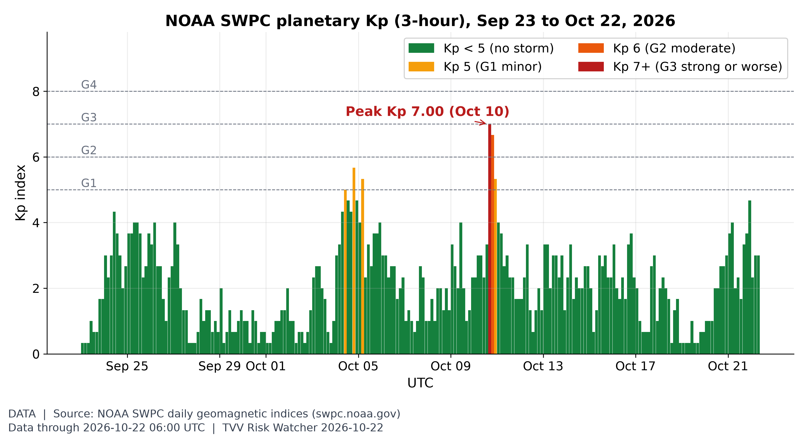
Geomagnetic activity, last 30 days. Kp peaked at 7.00 on Oct 10 in this 30-day window; Oct 21 maxed at Kp 4.67 (UTC day), and NOAA's latest 3-day forecast (issued 2026 Oct 22 0030 UTC) has a peak Kp 4.67 (NOAA Scale G1) on Oct 22. [Data; data as of 2026-10-22 06:00 UTC (partial day; forecast issued 2026 Oct 22 0030 UTC)] Source: swpc.noaa.gov data page
5. Critical Infrastructure / Transportation Disruptions
- ★ Arizona mud floods: an overnight flash flood partly buried cars in debris in Clifton, where crews cleared roads Oct 21; the NWS warned of severe debris flows on the Moenkopi Wash, at major flood stage, with a flood watch into Thursday evening. ABC15 Clifton · NWS Moenkopi warning
- Southwest storm: northern Arizona had its first tornado watch in more than 16 years on Oct 21, Flagstaff reported 1.75-inch hail and a 72 mph gust, and up to 3 inches of rain, locally 5, threatens mudslides on burn scars, weather.com said Oct 22. weather.com Southwest flood risk
- Mud floods in history: the deadliest documented mudflows include the 1985 Nevado del Ruiz lahars, which killed more than 20,000 in Armero, Colombia, and Venezuela's 1999 Vargas debris flows, an estimated 19,000 dead (USGS). The online mud-flood theory of buried pre-modern cities is undocumented. USGS Vargas fact sheet · USGS Armero lessons · YouTube video
- Ukraine power: Ukrenergo said Russian strikes on Oct 22 cut power in Dnipropetrovsk, Donetsk, Zaporizhzhia, Sumy, Kharkiv and Kherson regions, with up to two rounds of hourly outages; consumption at 9:30 a.m. matched the day before. Censor.NET / Ukrenergo
- EIA weekly (Oct 21): US crude stocks fell 3.06 million barrels to 412.5 million versus an expected 820,000 draw, gasoline stocks fell 2.95 million barrels, distillates rose 1.68 million and refinery utilization slipped to 93.4%, Reuters said. Reuters via BOE Report
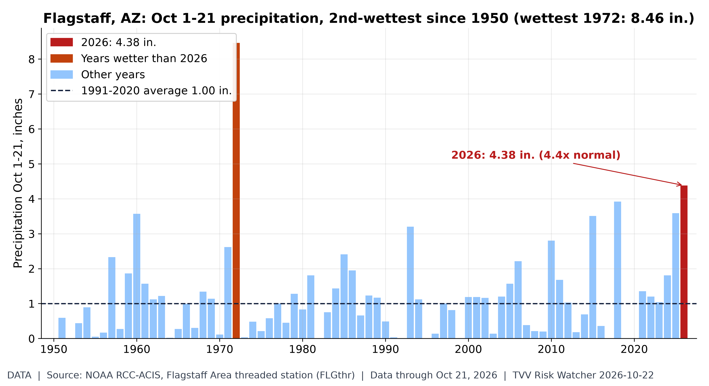
Arizona's wet October. Flagstaff area (NOAA ACIS threaded record) logged 4.38 in. of precipitation Oct 1-21, 2026, about 4.4x the 1991-2020 average of 1.00 in. and the 2nd-wettest Oct 1-21 since 1950 (only 1972 was wetter, 8.46 in.). Biggest day: 1.98 in. on Oct 11. Context for the Oct 21 Clifton mud flood and Moenkopi Wash debris-flow warnings (both elsewhere in Arizona; this is one station, not a statewide total). [Data; data as of Oct 21, 2026 (daily; provisional)] Source: data.rcc-acis.org data page
6. Econo-Metrics
- ★ Gasoline: AAA's national regular average rose to $4.2701 a gallon on Oct 22 from $4.2644 a day earlier, versus $4.3344 a week ago and $3.0656 a year ago; diesel eased to $6.3090. AAA national average
- ★ Electricity: no new EIA wholesale print since Oct 15; Europe's Oct 22 day-ahead power ran from €22.4/MWh in Finland to €258.3/MWh in Italy, with Germany at €148.6 and France €161.3. prices.eu.org day-ahead · EIA wholesale data
- ★ FedWatch: fed funds futures priced an 86.0% chance of an Oct 28 hold and 14.0% for a 25bp hike, SessionOpen's tracker showed Oct 22. SessionOpen Fed Watch · CME FedWatch tool
- ★ France bond risk: the 10-year OAT yield hit 5% on Oct 21 for the first time since 2002 and its Bund premium edged back toward early October's 15-year high near 160bp, Reuters said; Carrefour fell about 13% after cutting guidance over protests. Reuters via Euronext · Bloomberg video
- Wednesday Oct 21: the Dow rose 0.69% to 52,856.09, the S&P 500 0.58% to 7,757.17 and the Nasdaq 1.05% to 26,702.86 on AI earnings; the 10-year Treasury yield slipped 0.6bp to 5.111% and the STOXX 600 gained 0.92%. Reuters via Euronext
- Oil: Brent crude rose 3.1% to $112.20 by 4:12 a.m. ET Oct 22 and WTI 2.79% to $99.86 after the NYT report on renewed Iran strike plans and the US order for staff to leave Saudi Arabia, CNBC said. CNBC oil
- Movers Oct 21: 275 of 501 S&P 500 tickers rose and SPY gained 0.53%, with technology the best sector; AT&T fell 6.45% after reporting before the open, DexCom 6.39% and Netflix 5.31%, Quant500 said. Quant500 S&P movers
- French bond risk hits a 15-year high as a risk gauge climbs. Bloomberg video
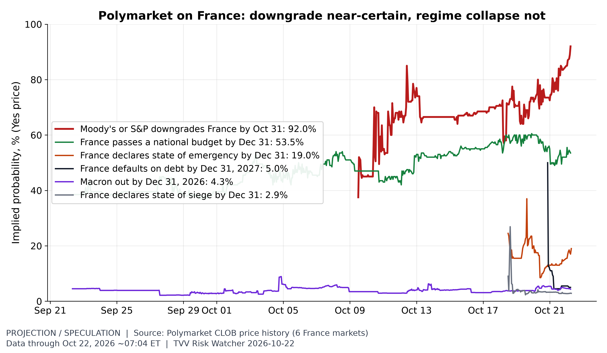
Betting on France's crisis. Polymarket hourly Yes prices at ~07:00 ET Oct 22: Moody's or S&P downgrades France by Oct 31 92.0% (from 37.5% on Oct 9); France passes a national budget by Dec 31 53.5% (from 38.5% on Sep 22); France declares state of emergency by Dec 31 19.0% (new market, opened Oct 18); France defaults on debt by Dec 31, 2027 5.0% (new market, opened Oct 20); Macron out by Dec 31, 2026 4.3% (from 4.5% on Sep 22); France declares state of siege by Dec 31 2.9% (new market, opened Oct 18). Thin markets (the default contract traded ~$260 in volume) can move on small bets; odds are crowd prices, not forecasts by rating agencies. [Projection / speculation; data as of Oct 22, 2026 ~07:04 ET (hourly)] Source: polymarket.com data page
Bond Risks in Europe
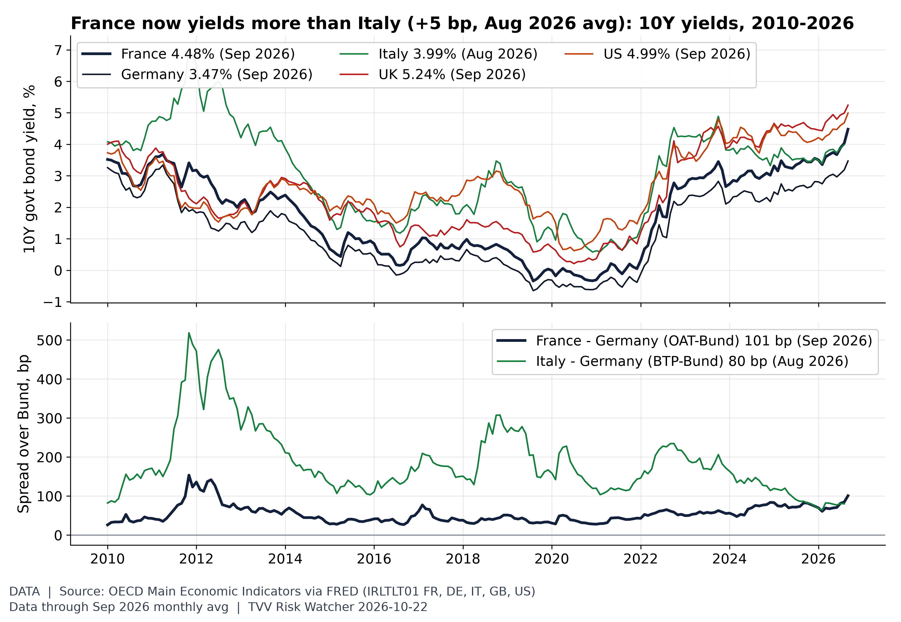
France bond risk, in context. OECD monthly 10Y yields: France 4.48% in Sep 2026, Germany 3.47%, UK 5.24%, US 4.99%, Italy 3.99% (Aug 2026). OAT-Bund 101 bp vs BTP-Bund 80 bp; France-Italy gap +5 bp (Aug 2026; it was -56 bp in Jan 2010). Monthly averages lag daily moves; daily OAT quotes are not charted (ECB/Banque de France daily series unreachable from the box). [Data; data as of Sep 2026 monthly avg (Italy Aug 2026); OECD MEI via FRED, fetched Oct 22 6 AM] Source: fred.stlouisfed.org data page
7. Epidemic / Bio-Metrics
- ★ Critical Water Shortage: Hyderabad may cut supply to once every three days from alternate days as tanker bookings hit 6,000-7,000 a day, double last year (Oct 22). New Indian Express Hyderabad
- ★ Ebola: DRC SitRep 159 (Oct 21) counts 9,704 confirmed cases and 4,687 deaths, 67 and 41 in a day; WHO said Nigeria's Abuja case is Bundibugyo virus. SitRep 159 · WHO Nigeria
- Kenya's Ebola count stays at nine confirmed cases, all in one cluster, with 134 of 135 contacts traced and quarantined, ABC News reported Oct 21; Nigeria is monitoring 44 contacts. ABC News Ebola
- Critical Water Shortage: Mira-Bhayander near Mumbai faces fixed weekly supply shutdowns totalling 54 hours, 18 hours on STEM and 36 hours on MIDC sources, NDTV Profit reported Oct 21. NDTV Profit Mira-Bhayander
- Critical Water Shortage: Bandung's mayor said Oct 21 drought has cut PDAM Tirtawening supply, leaving many customers dry, and ordered regular tanker-truck deliveries until rains arrive. Kompas Bandung
- South Africa: 408 people, mostly children under four, fell ill from contaminated tap water in Tshwane's Region 7 in the 12 days to Oct 18; NICD found norovirus, Campylobacter and Shigella and the city added a 36th tanker Oct 21. IOL Tshwane
- Measles: Pennsylvania confirmed 1,317 cases in 43 counties on Oct 21, with 31 new since Oct 19, 251 hospitalizations and five deaths, as MMR doses top 39,000 so far this month. Pennsylvania DOH
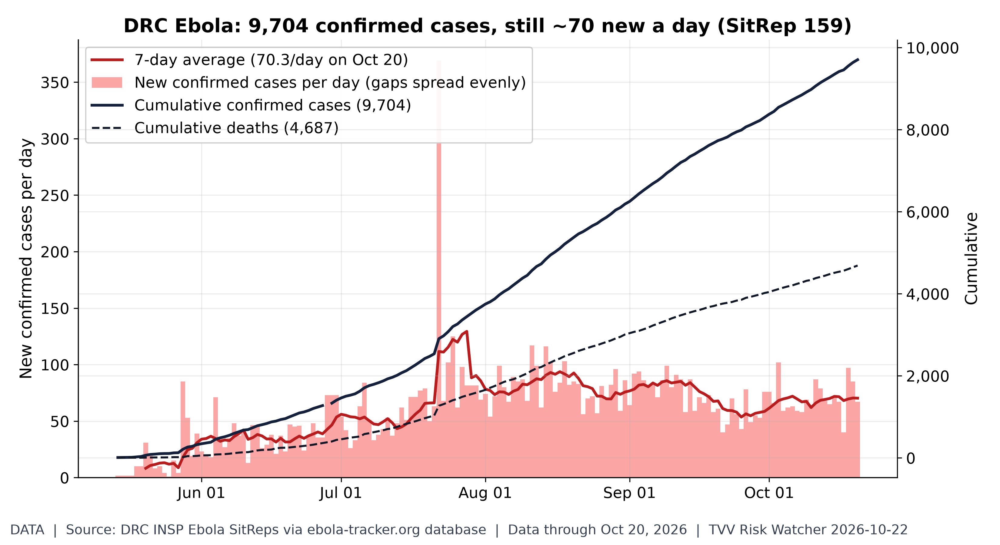
Ebola outbreak not slowing. INSP SitRep 159 (situation Oct 20): 9,704 confirmed cases and 4,687 deaths (48.3% of confirmed cases) since the first bulletin May 14; 7-day average 70.3 new cases/day (peak 129.4 around Jul 28). Top provinces: Ituri 7,040, Nord-Kivu 2,146, Haut-Uélé 421. Daily values where bulletins skip days are spread evenly; data are as transcribed by ebola-tracker.org from INSP PDFs. [Data; data as of Oct 20, 2026 (SitRep 159, published next day)] Source: ebola-tracker.org data page
8. Gold and Silver
- ★ Kitco 6:03 a.m. ET Oct 22: gold $4,086.50, silver $55.79, platinum $1,578, palladium $1,037, copper $6.5029/lb; bitcoin $81,881.21, ether $2,406.06, XRP $1.33. Kitco text quotes · Kitco live prices
- Kitco showed gold down 1.30%, silver down 3.57%, platinum down 2.71%, palladium down 3.36% and copper down 1.01% by 6:03 a.m. ET Oct 22, while bitcoin was down 1.76% and ether 1.91% on the day. Kitco text quotes · Kitco live prices
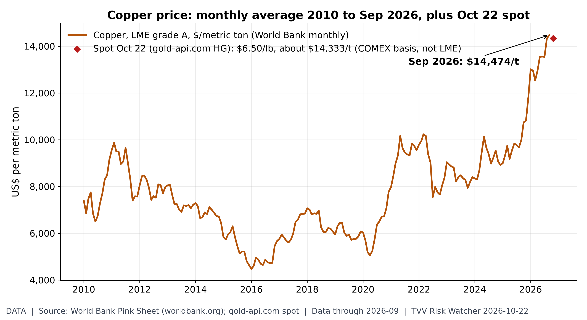
Copper near the top of its range. Copper averaged $14,474/t in September (a 2010-26 monthly record); the Oct 22 COMEX-basis spot quote is $6.50/lb (about $14,333/t). [Data; data as of 2026-09 (World Bank monthly, held); 2026-10-22 07:05 ET (gold-api.com HG spot)] Source: worldbank.org data page
9. Stock Averages and Nasdaq Major Movers
- ★ Gainers: POM (POM) +200.84%; SPHL (SPHL) +44.86%; AHT (AHT) +43.85%; Losers: AVEX (AVEX) -32.71%; CMCT (CMCT) -29.20%; NCPL (NCPL) -22.28%; Oct 21 StockSetups Oct 21 movers
- ★ Gainers: SVRN (SVRN) +41.94%; LHSW (LHSW) +41.10%; ATII (ATII) +39.05%; Losers: TKNO (TKNO) -20.97%; AMOD (AMOD) -20.16%; RCUS (RCUS) -19.66%; Oct 21 StockSetups Oct 21 movers
- ★ Gainers: SDEV (SDEV) +31.33%; Winnebago (WGO) +10.92%; SKYD (SKYD) +10.63%; Losers: RC (RC) -13.98%; Six Flags (FUN) -10.18%; Lithia (LAD) -10.15%; NYSE Oct 21 StockSetups NYSE movers
- ★ Gainers: OLOX (OLOX) +35.69%; BETR (BETR) +29.74%; PDSB (PDSB) +27.54%; Losers: GTBP (GTBP) -26.06%; GNLX (GNLX) -17.60%; MWYN (MWYN) -15.93%; Nasdaq Oct 21 StockSetups Nasdaq movers
- ★ Gainers: Super Micro (SMCI) +9.55%; Charles River (CRL) +9.33%; EchoStar (SATS) +7.23%; Losers: AT&T (T) -6.45%; DexCom (DXCM) -6.39%; Netflix (NFLX) -5.31%; S&P Oct 21 Quant500 S&P movers
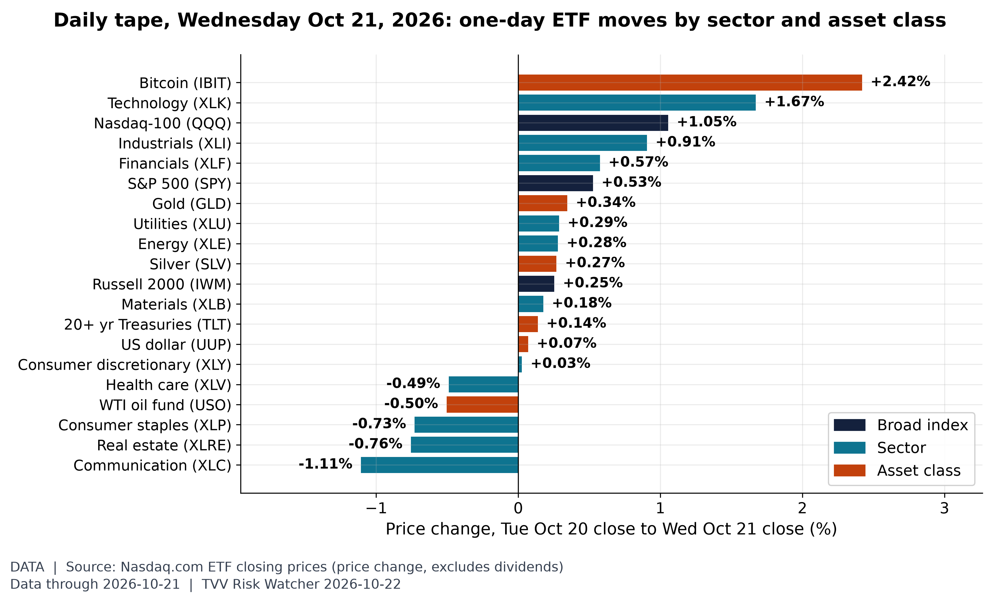
The last session by sector. On Wednesday Oct 21, the best performer was Bitcoin (IBIT, +2.42%) and the worst Communication (XLC, -1.11%), with SPY +0.53% and QQQ +1.05%. [Data; data as of 2026-10-21 (latest close; Nasdaq.com ETF history)] Source: nasdaq.com data page
10. Polymarket and Kalshi Sentiment Highlights
- ★ US-Iran: Polymarket's ceasefire-holds-through-Oct 31 contract fell to 73.5% on Oct 22 from 81.5% as the NYT reported strike plans; Nov 30 traded at 39%. Polymarket US-Iran
- ★ Israel's next PM: Polymarket priced Eisenkot at 49.65% on Oct 22, down 1.85 points, Netanyahu 26.5% and Bennett 16.5%, up 4. Polymarket Israel PM
- ★ Ukraine ceasefire: Polymarket's Oct 31 contract fell to 0.8% on Oct 22 from 3.05%, while Dec 31 rose 2 points to 13.5%. Polymarket Ukraine ceasefire
- ★ Hormuz peak: Kalshi's week-to-Oct 25 market traded 86 cents for peak daily traffic above 4 and 74 cents above 5, up from 72, on Oct 22. Kalshi Hormuz peak traffic
- Pump prices: Kalshi's October AAA market last traded 69 cents for a finish above $4.20, up from 42, 21 cents above $4.30 and 97 cents above $4.10 on Oct 22. Kalshi AAA October market
- Oct FOMC: fed funds futures put an Oct 28 hold at 86.0% while Kalshi's hold contract last traded 88 cents on Oct 22, unchanged, and the 25bp hike 11 cents; still converged Kalshi Oct Fed decision · SessionOpen Fed Watch
- Dec FOMC: Kalshi's Dec 9 contract for a 25bp hike last traded 75 cents on Oct 22, unchanged, with a hold at 22 cents; SessionOpen's futures path implies 4.14% after the December meeting. Kalshi Dec Fed decision · SessionOpen Fed Watch
- Oil: Polymarket's October WTI book priced a $105 high at 44% on Oct 22 and $110 at 16.5%, while a drop to $95 slipped to 49.5%. Polymarket WTI October
- Yemen: no new move since Oct 20 on a Saudi-Houthi ceasefire by Dec 31 (30.5% on Polymarket), with Oct 31 near 3.85%; Hormuz traffic back to normal by Dec 31 held at 11.5%. Polymarket Saudi-Houthi ceasefire · Polymarket Hormuz normal
- Midterms: Polymarket priced Democrats at 92.5% to win the House, up 1 point, and 66.5% for the Senate, up 2, on Oct 22. Polymarket House 2026 · Polymarket Senate 2026
- Polymarket priced any Israeli coalition winning a majority at 14.5% on Oct 22, and a US recession by end-2026 at 7.5%. Polymarket Israel majority · Polymarket US recession
11. Tech-Metrics
- ★ SI-AGI Danger / Arrival Index: Kalshi any-company AGI before Jan 1, 2028 traded 38 cents on Oct 22, down from 52; Oct 1, 2027 at 42 cents. Kalshi AGI by date
- AI spending: Meta raised the low end of its annual spending forecast after the Oct 21 close, Super Micro guided above estimates and SpaceX shares rose 7.8% on Musk's merger remark, Reuters said. Reuters via Euronext
- ★ Cybercab authorized: Texas DMV lists 351 Cybercabs among 858 Tesla robotaxis, up 2 on Oct 22; Tesla beat Q3 estimates with $28.05B revenue. Robotaxi Pulse · CNBC Q3
- Tesla Q3 detail: net income fell 29% to $787 million, capex more than doubled to $3.73 billion, active FSD subscriptions rose 67% to 1.74 million, and Musk said robotaxis start to be noticeable in Q2 next year, CNBC said Oct 21. CNBC Tesla Q3
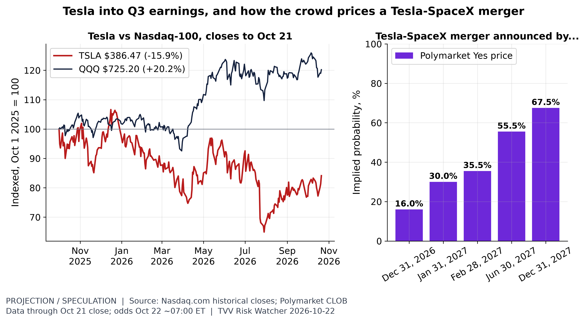
Tesla: stock and merger odds. Nasdaq.com closes: TSLA $386.47 on Oct 21 (-15.9% since Oct 1 2025) vs QQQ +20.2%; the Oct 21 close predates the after-hours Q3 report. Polymarket merger-announcement odds by deadline (~07:00 ET Oct 22): Dec 31, 2026 16.0%, Jan 31, 2027 30.0%, Feb 28, 2027 35.5%, Jun 30, 2027 55.5%, Dec 31, 2027 67.5%. [Projection / speculation; data as of Oct 21 close; odds Oct 22 ~07:00 ET] Source: nasdaq.com data page
- Tesla's Q3 beat (48¢ vs. 45¢) left the stock near $376, about 218x the FY2026 consensus of $1.72 and 213x its annualized Q4 estimate. That falls to 175x on FY2027's $2.15, as analysts trimmed estimates after the report. SpaceX (SPCX, about $145) is nearly 910x FY2026's thin 16¢, but 93x annualized Q4 and just 43x FY2027's $3.40 consensus. The market expects SpaceX earnings to ramp much faster than Tesla's, even as merger talk links the two.
TECHVESTVENTURES ACTION-ALERT — October 22, 2026
EDITOR — Michael Hentschel
Most news events require or spawn no action or reaction, some (but not many) are or become warnings. We draw attention to substantial lifestyle risks and market risks in particular, some created by Mid-Term Vote anxieties, Middle East tensions, vast over-indebtedness globally, and other events we track. Longer term but capable of causing sudden power surges as serious as the Carrington Event. Climate instability occasioned by long-term cyclical solar electro-magnetic flares, is becoming much more prominent and even more likely. New AI predictive analytics and pattern seekers are pointed in some of these directions, and we monitor imminent likelihood. Some readers might hedge and others might see opportunity. The above is not investment advice.
Graph Sources
• Oil geopolitical risk: off the March peak, still high: https://www.matteoiacoviello.com/ai_gpr.html
• Oil geopolitical risk: off the March peak, still high (data): https://www.matteoiacoviello.com/ai_gpr_files/ai_gpr_data_monthly.csv
• The deadliest conflict zones of 2026: https://ucdp.uu.se/downloads/
• The deadliest conflict zones of 2026 (data): https://ucdp.uu.se/downloads/candidateged/GEDEvent_v26_0_9.csv
• Which regions are shaking more?: https://earthquake.usgs.gov/fdsnws/event/1/query?format=csv&starttime=2016-01-01&minmagnitude=5&orderby=time-asc&limit=20000&eventtype=earthquake
• Which regions are shaking more? (data): https://earthquake.usgs.gov/earthquakes/search/
• Geomagnetic activity, last 30 days: https://www.swpc.noaa.gov/products/planetary-k-index
• Geomagnetic activity, last 30 days (data): https://services.swpc.noaa.gov/text/daily-geomagnetic-indices.txt
• Geomagnetic activity, last 30 days (data): https://services.swpc.noaa.gov/text/3-day-forecast.txt
• Arizona's wet October: https://data.rcc-acis.org/StnData?sid=FLGthr&sdate=1950-01-01&edate=2026-10-22&elems=pcpn&output=json
• Arizona's wet October (data): https://www.rcc-acis.org/
• France bond risk, in context: https://fred.stlouisfed.org/series/IRLTLT01FRM156N
• France bond risk, in context (data): https://fred.stlouisfed.org/series/IRLTLT01DEM156N
• France bond risk, in context (data): https://fred.stlouisfed.org/series/IRLTLT01ITM156N
• France bond risk, in context (data): https://fred.stlouisfed.org/series/IRLTLT01GBM156N
• France bond risk, in context (data): https://fred.stlouisfed.org/series/IRLTLT01USM156N
• Ebola outbreak not slowing: https://ebola-tracker.org/en/database/
• Ebola outbreak not slowing (data): https://ebola-tracker.org/reports/SITREP_MVE_159.pdf
• Ebola outbreak not slowing (data): https://ebola-tracker.org/data/base-ebola-rdc.csv
• Copper near the top of its range: https://www.worldbank.org/en/research/commodity-markets
• Copper near the top of its range (data): https://api.gold-api.com/price/HG
• The last session by sector: https://www.nasdaq.com/market-activity/etf/spy/historical
• The last session by sector (data): https://www.nasdaq.com/market-activity/etf/xle/historical
• The last session by sector (data): https://www.nasdaq.com/market-activity/etf/gld/historical
• Betting on France's crisis: https://polymarket.com/event/moodys-or-sp-downgrades-france-byptptpt
• Betting on France's crisis (data): https://polymarket.com/event/will-france-pass-a-national-budget-by-december-31
• Betting on France's crisis (data): https://polymarket.com/event/france-declares-state-of-emergency-byptptpt
• Betting on France's crisis (data): https://polymarket.com/event/france-defaults-on-debt-by-december-31-2027
• Betting on France's crisis (data): https://polymarket.com/event/macron-out-in-2025
• Betting on France's crisis (data): https://polymarket.com/event/france-declares-state-of-siege-byptptpt
• Tesla: stock and merger odds: https://www.nasdaq.com/market-activity/stocks/tsla/historical
• Tesla: stock and merger odds (data): https://www.nasdaq.com/market-activity/etf/qqq/historical
• Tesla: stock and merger odds (data): https://polymarket.com/event/tesla-and-spacex-merger-officially-announced-by-june-30